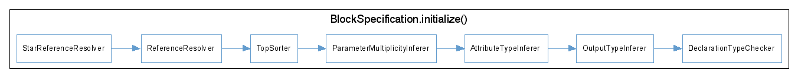

The implementation of the specification part of the ConQAT meta-model. For details see {@link org.conqat.engine.core.driver}
The execution order of actions taking place while initializing a block specification is shown in this image: 